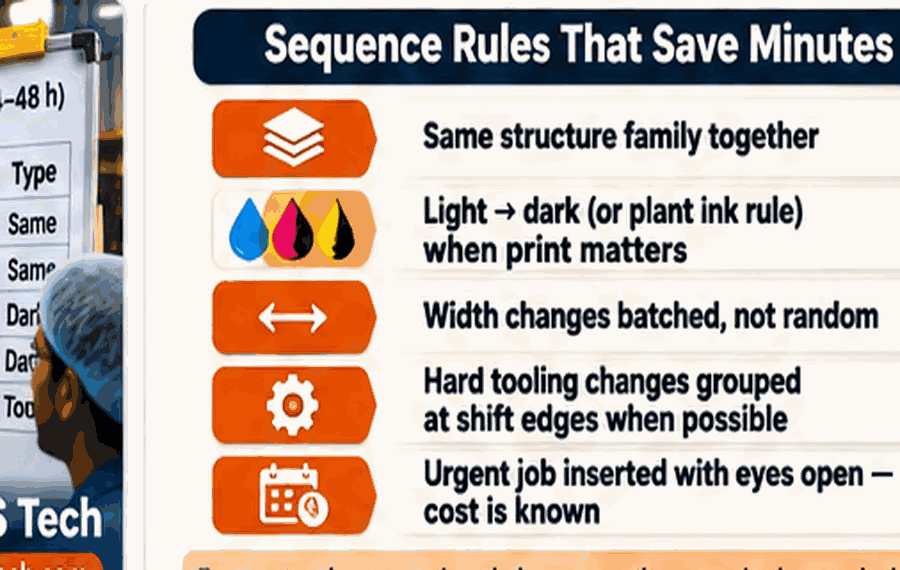
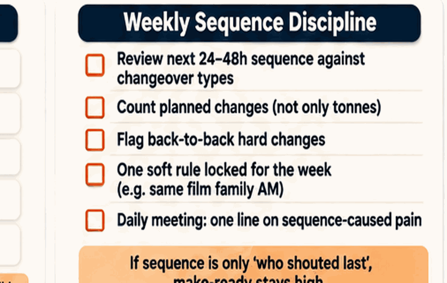
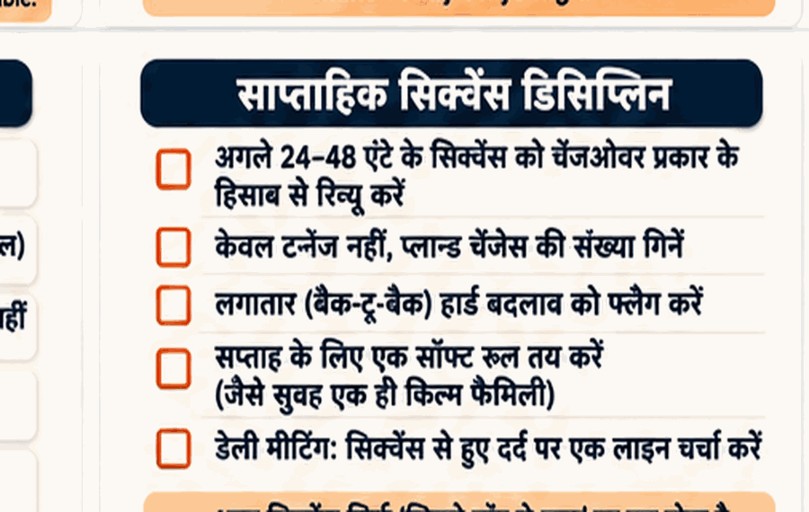

📋 Job Sequence That Reduces Changeover Pain
📖 8-min read | Plant Operations | Practical, numbers-first
Make-ready and staging (Blogs 102, 106) fix how you change. Job sequence fixes how often you force a hard change in the first place.
If the day is a random mix of structures, widths, and tooling, the machine will stop more — even with a perfect recipe on the panel.
Planning Is Part of Changeover Time
Stopped minutes are measured at the machine. Many of them were decided in the schedule: two incompatible jobs back-to-back, an urgent insert in the middle of a stable run, or a width pattern that guarantees edge fights on the slitter later.
This post is not a full APS system. It is a weekly habit: see the sequence, count the changes, soften what you can.
Sequence Rules That Save Minutes

- Same structure family together — fewer full recipe rebuilds
- Ink / colour direction — follow your plant rule (often light→dark) so washups are planned, not surprises
- Width changes batched — random widths multiply setup and later trim waste
- Hard tooling changes — group near shift edges or after breaks when crews are full, when quality allows
- Urgent inserts — allowed, but named: “this adds one hard changeover”
Write your plant’s version on one page next to the PPC desk. Perfect theory that the scheduler ignores is decoration.
Weekly Sequence Discipline

- Review next 24–48 hours on the constraint line — not only tonnes, but change types
- Count planned changes; flag back-to-back hard changes
- Lock one soft rule for the week (e.g. same film family in the morning block)
- Daily meeting: one line when sequence caused avoidable pain
- After the week: one pattern to avoid next week
Link to Make-Ready, Staging, and Waste
102 Make-ready — fewer hard changes → fewer long stops.
106 Staging — stable sequence makes staging predictable.
108 Waste board — sequence-driven scrap should be named, not only “quality.”
114 Edge trim — width sequence and parent planning show up as trim kg on the slitter.
Key Takeaway
📋 जॉब सिक्वेंस जो चेंजओवर दर्द कम करे
📖 9-min read | प्लांट ऑपरेशन्स
मेक-रेडी और स्टेजिंग बताते हैं कैसे बदलें। जॉब सिक्वेंस बताता है कितनी बार कठिन बदलाव थोपे जा रहे हैं।
